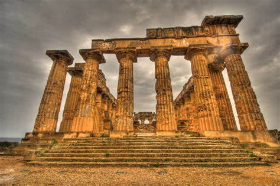
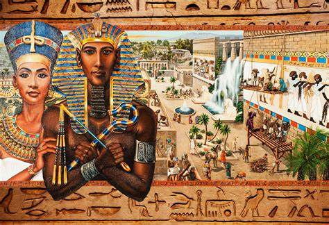
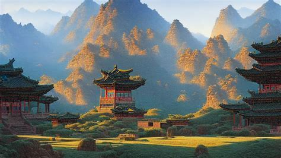
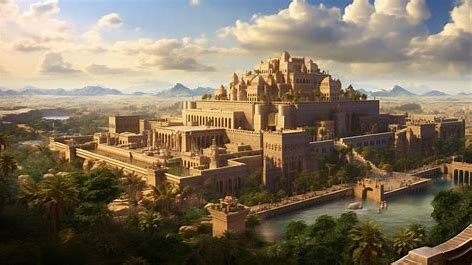

-
Greece (5th Century BC)
The 5th century BC in Greece is often called the Classical Period, a golden era marked by remarkable political, intellectual, and cultural achievements. The development of democracy in Athens under Pericles provided a unique political system where citizens participated in governance, setting an enduring example for future societies. The Persian Wars, particularly the battles of Marathon and Salamis, showcased the unity and resilience of Greek city-states against a formidable empire. This century is also known for the birth of Western philosophy, with figures like Socrates, Plato, and Aristotle deeply influencing fields such as ethics, politics, and metaphysics. Architecture reached new heights with the construction of the Parthenon. Artistic expressions in sculpture and pottery emphasized naturalism and humanism, capturing the beauty of the human form. Additionally, athletic competitions like the Olympics embodied the Greek ideal of physical and mental excellence. The Peloponnesian War between Athens and Sparta marked a tragic end to the century, revealing the fragility of this golden age and the vulnerabilities of the city-states.
- Philosophers: Greek philosophers like Socrates, Plato, and Aristotle laid the foundations of Western philosophy. Socrates introduced the Socratic method, questioning assumptions and seeking deeper truths. Plato, a student of Socrates, explored ideas of justice and governance in "The Republic," while Aristotle, Plato's student, contributed to various fields, including biology, ethics, and political theory.
- Artisans: Greek artisans excelled in sculpture, pottery, and architecture, producing lifelike statues of gods and heroes, intricate vases depicting mythological scenes, and monumental structures like the Parthenon. These works reflect technical skill, harmony, and proportion, emphasizing humanism and the idealized human form.
-
Rome (476-376 BC)

The period from 476 to 376 BC was foundational for the Roman Republic. Following the fall of the Roman kings, the Republic emerged with a complex system of checks and balances, aimed at preventing any single person from holding too much power. The conflict of the orders was a significant social struggle, as the plebeians (commoners) demanded political equality with the patricians (aristocrats). This led to the establishment of the Twelve Tables, Rome's first written laws, which guaranteed certain rights to citizens. Rome also expanded its territory through strategic alliances, battles, and the disciplined flexibility of the Roman legions, securing dominance over the Italian peninsula. The values of civic duty, loyalty, and public service that emerged during this period influenced Rome’s governance and would later shape Western political systems. Cultural exchanges with the Etruscans and Greeks brought new ideas in art, religion, and architecture, leading to the construction of temples, roads, and aqueducts that displayed Roman engineering prowess.
- Philosophers: Though less known for philosophy than Greece, Roman thinkers like Cicero and Seneca made valuable contributions to Stoicism and political philosophy. Cicero emphasized civic virtue, eloquence, and justice, while Seneca, a prominent Stoic philosopher, wrote about ethics and the importance of inner tranquility and resilience.
- Artisans: Roman artisans excelled in various crafts, including pottery, metalwork, and mosaics, which adorned public buildings, private villas, and baths. Their work was both functional and decorative, with mosaics often depicting scenes from Roman mythology, daily life, and nature, reflecting Roman values and artistic skill.
-
Egypt (3323-322 BC)
The period from 3323 to 322 BC corresponds to Egypt's early dynastic period, marked by the unification of Upper and Lower Egypt under Pharaoh Narmer. This unification laid the foundations for the centralized government and the powerful role of the pharaoh, seen as both a political leader and a divine figure. Monumental architecture began with early mastabas, precursors to the grand pyramids of later dynasties. Hieroglyphic writing, an innovation of this time, enabled the recording of laws, administration, and history, while Egyptian religion developed complex rituals centered around the afterlife. The Nile's annual flooding allowed for agricultural abundance, supporting a structured society with a distinct hierarchy. Trade routes were established, connecting Egypt to the Levant, Nubia, and the Mediterranean, bringing wealth and resources into the kingdom. Religious beliefs deeply influenced art, leading to the construction of temples and the creation of intricate artifacts for the afterlife.
- Pharaohs: Pharaohs like Narmer unified Egypt and were seen as divine rulers, bridging the mortal and spiritual realms. They commanded vast building projects and religious rituals, embodying both political power and religious authority.
- Philosophers: Egyptian society didn’t produce philosophers in the Greek sense, but scribes and priests played similar roles in preserving and teaching knowledge in mathematics, astronomy, medicine, and religious doctrine.
- Artisans: Egyptian artisans were highly skilled, creating jewelry, pottery, statues, and monumental sculptures for temples and tombs. Their work often depicted gods, pharaohs, and scenes of daily life, emphasizing balance, order, and respect for the afterlife.
-
China (206 BC - 221 AD)
The Han Dynasty (206 BC - 221 AD) was a pivotal era in Chinese history, marked by political stability, economic prosperity, and significant cultural achievements. Confucianism became the state philosophy, shaping governance, social hierarchy, and ethical conduct. The Silk Road trade route established during this time connected China to the Mediterranean, facilitating the exchange of goods, ideas, and religions such as Buddhism. The invention of paper revolutionized record-keeping and education, while advancements in ironworking improved agricultural tools and military equipment. The Han Dynasty also initiated the civil service examination system, promoting merit-based appointments that would endure for centuries. Science and technology flourished, with notable achievements in astronomy, mathematics, and medicine.
- Philosophers: Confucian scholars during the Han Dynasty emphasized respect for hierarchy, family, and the state. Confucius’s teachings on ethics, morality, and social order were integral to Chinese governance and cultural values.
- Artisans: Han artisans were renowned for their ceramics, bronze work, and silk weaving. They produced sophisticated pottery, intricate bronze artifacts, and fine silk garments, contributing to the rich material culture of the period.
-
Babylon (539 BC - 476 BC)
In 539 BC, Babylon fell to Persian king Cyrus the Great, bringing an end to the Neo-Babylonian Empire. Under Persian rule, Babylon continued to be a center of cultural and economic activity, respected by its conquerors. The city retained much of its identity, with its temples and ziggurats remaining in use. Babylonian scholars made advancements in astronomy, developing a lunar calendar and calculating planetary movements. The Hanging Gardens, one of the Seven Wonders of the Ancient World, symbolized Babylon’s architectural grandeur. Trade flourished as Babylon connected Persia to other regions, making it an essential hub for commerce and cultural exchange.
- Philosophers: Although Babylon didn’t have philosophers in the traditional sense, scholars excelled in mathematics and astronomy, developing sophisticated methods to track celestial events and predict eclipses.
- Artisans: Babylonian artisans were skilled in brickmaking, pottery, and metalwork, creating intricate designs for palaces, temples, and everyday items. Their work reflected both artistic ability and the architectural grandeur of the period.